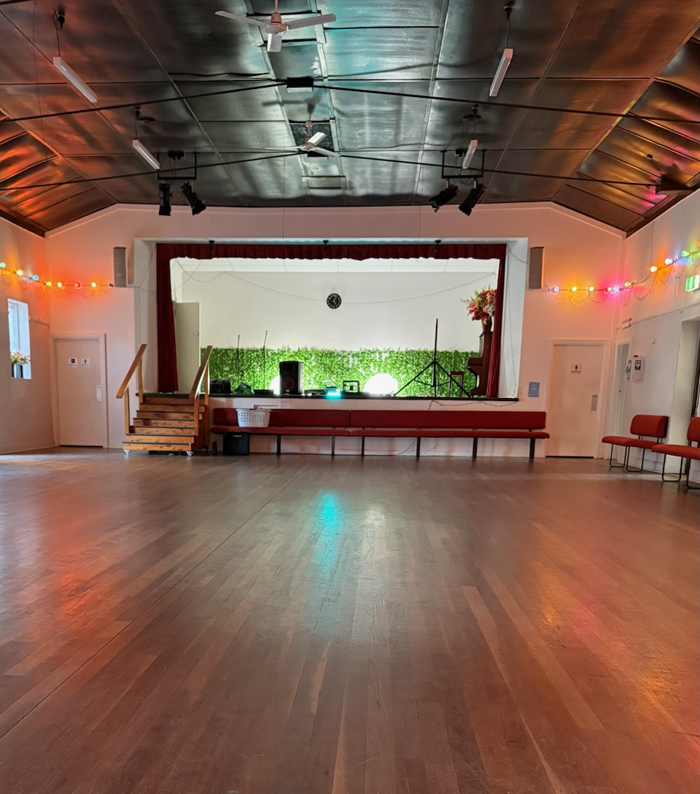

About Us
Bush dancing is a traditional style of Australian folk dancing accompanied by an acoustic band which blends vibrant Irish and Scottish roots in an Australian context. Today in Sydney we work to keep this scene alive by hosting events celebrating timeless Aussie tradition!
Join us one evening to experience a night of true Australian culture! We have a talented team of performers who bring the energy and infectious spirit of traditional bush dancing to life. Whether you're a seasoned dancer or it's your first time, there's something for everyone!
Meet our team
No partner or experience needed. Our caller makes every dance easy to join.
Live acoustic music. Traditional tunes with plenty of lift.
All ages welcome. Bring friends, family, or simply yourself.
Our dance hall
Come dance with us
Every Josh Anderson Music event brings live music, a caller, and a welcoming room ready to get moving.
Plan your next event